Especificaciones Técnicas
- Regulable en altura
- Regulación de compresión
- Regulación de rebote
- Orings VITON
- Reservorio remoto
- 100% reparable
- 100% regulable
- 6 Meses de garantía
- Topmount rotulado
- Bujes excentricos corrección de comba
- Hecho en Bolivia
